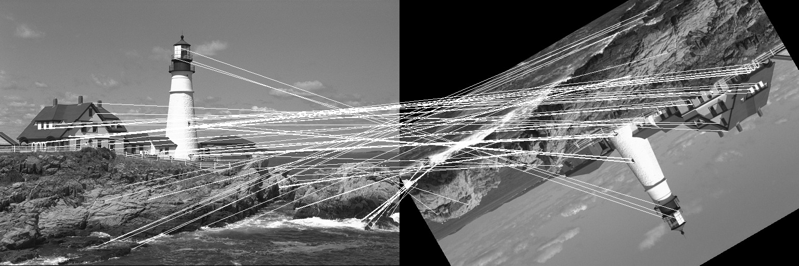

The ORB descriptor is a somewhat similar to BRIEF. It doesn’t have an elaborate sampling pattern as BRISK or FREAK.
However, there are two main differences between ORB and BRIEF:
ORB uses an orientation compensation mechanism, making it rotation invariant.
ORB learns the optimal sampling pairs, whereas BRIEF uses randomly chosen sampling pairs.
The ORB descriptor uses the intensity centroid as a measure of orientation. To calculate the centroid, we first need to find the moment of a patch, which is given by Mpq = x,yxpyqI(x,y). The centroid, or ‘centre of mass' is then given by C=(M10M00, M01M00).
The vector from the corner’s center to the centroid gives the orientation of the patch. Now, the patch can be rotated to some predefined canonical orientation before calculating the descriptor, thus achieving rotation invariance.
ORB tries to take sampling pairs which are uncorrelated so that each new pair will bring new information to the descriptor, thus maximizing the amount of information the descriptor carries. We also want high variance among the pairs making a feature more discriminative, since it responds differently to inputs. To do this, we consider the sampling pairs over keypoints in standard datasets and then do a greedy evaluation of all the pairs in order of distance from mean till the number of desired pairs are obtained i.e. the size of the descriptor.
The descriptor is built using intensity comparisons of the pairs. For each pair if the first point has greater intensity than the second, then 1 is written else 0 is written to the corresponding bit of the descriptor.
Example
Let us take a look at a simple example where the ORB descriptor is used to match two images where one has been translated by (50, 40) pixels and then rotated by an angle of 75 degrees. We will use the lighthouse image from the TestImages package for this example.
First, let us create the two images we will match using ORB.
using ImageFeatures, TestImages, Images, ImageDraw, CoordinateTransformations
img = testimage("lighthouse")
img1 = Gray.(img)
rot = recenter(RotMatrix(5pi/6), [size(img1)...] .÷ 2) # a rotation around the center
tform = rot ∘ Translation(-50, -40)
img2 = warp(img1, tform, indices(img1))The ORB descriptor calculates the keypoints as well as the descriptor, unlike BRIEF. To create the ORB descriptor, we first need to define the parameters by calling the ORB constructor.
orb_params = ORB(num_keypoints = 1000)Now pass the image with the parameters to the create_descriptor function.
desc_1, ret_keypoints_1 = create_descriptor(img1, orb_params)
desc_2, ret_keypoints_2 = create_descriptor(img2, orb_params)The obtained descriptors can be used to find the matches between the two images using the match_keypoints function.
matches = match_keypoints(ret_keypoints_1, ret_keypoints_2, desc_1, desc_2, 0.2)We can use the ImageDraw.jl package to view the results.
grid = hcat(img1, img2)
offset = CartesianIndex(0, size(img1, 2))
map(m -> draw!(grid, LineSegment(m[1], m[2] + offset)), matches)